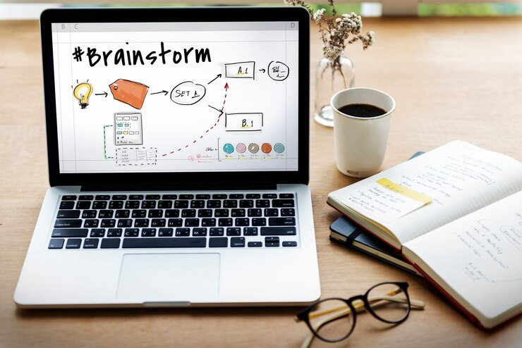

UI/UX Design and Web Development: Enhancing User Experience and Functionality
In the digital era, UI/UX design and web development have become essential components for creating a successful online presence. Both elements play crucial roles in delivering websites and applications that are not only visually appealing but also functional and user-friendly. Combining an effective user interface (UI) with a seamless user experience (UX) ensures that digital platforms meet user expectations and business goals.
1. Understanding UI and UX Design
What is UI Design?
UI (User Interface) design focuses on the visual and interactive elements of a product. It deals with aspects such as colors, typography, buttons, icons, and layout, ensuring that users can interact with the interface intuitively and efficiently. A good UI design enhances visual appeal and usability.
Key Principles of UI Design:
- Consistency in layout and style
- Intuitive navigation and clear design elements
- Attention to visual hierarchy
- Responsive and adaptive design
What is UX Design?
UX (User Experience) design focuses on the overall experience a user has while interacting with a product. It involves understanding user needs, behavior, and expectations to design processes that are simple, efficient, and enjoyable.
Key Principles of UX Design:
- User-centered design based on research
- Simplicity and clarity in workflows
- Accessibility and inclusivity
- Continuous testing and improvement based on user feedback
2. The Role of UI/UX Design in Web Development
Web development is the process of building and maintaining websites or web applications. While web developers ensure the platform functions properly, UI/UX designers make sure users enjoy the process of interacting with it.
Why UI/UX Design Matters in Web Development:
-
Improved User Satisfaction
A website with a well-designed UI/UX keeps users engaged, reduces frustration, and provides a positive experience, encouraging return visits. -
Higher Conversion Rates
Smooth navigation, clear call-to-action (CTA) buttons, and an engaging design guide users through their journey, increasing conversion rates. -
Optimized Usability
UX research helps identify pain points that users may face, allowing the development team to address these issues and create a user-friendly platform. -
Competitive Advantage
In a competitive digital space, a superior UI/UX design helps brands stand out and earn user trust.
3. The Web Development Process with UI/UX Integration
Web development typically involves front-end and back-end development, which work hand-in-hand with the UI/UX design process.
Front-End Development
Front-end development deals with the visible part of the website that users interact with. Technologies such as HTML, CSS, and JavaScript bring the UI/UX design to life.
- Frameworks like React, Vue.js, and Angular are commonly used for building dynamic and responsive interfaces.
Back-End Development
Back-end development focuses on the server-side logic, databases, and overall functionality of the website. Languages such as Python, PHP, Ruby, and Node.js power the back end.
- Tools like APIs ensure communication between the front end and back end.
Integration of UI/UX in Development:
- Research and Planning – UX designers collaborate with developers to align user needs with technical feasibility.
- Wireframing and Prototyping – Designers create wireframes and prototypes to outline structure and design.
- Development and Testing – Developers implement the design while ensuring the functionality matches the user journey.
- Usability Testing – The product is tested for usability, performance, and user satisfaction.
4. Trends in UI/UX Design and Web Development
To keep up with user expectations, designers and developers must embrace emerging trends and technologies.
UI/UX Design Trends:
- Dark Mode UI – A visually appealing and energy-efficient design option.
- Microinteractions – Small animations or responses that enhance user engagement.
- Voice User Interface (VUI) – Integrating voice commands for a hands-free experience.
- Accessibility Design – Creating inclusive products for all users, including those with disabilities.
Web Development Trends:
- Progressive Web Apps (PWA) – Websites that offer app-like experiences.
- Single-Page Applications (SPA) – Fast-loading web apps that offer a seamless browsing experience.
- Artificial Intelligence (AI) – AI tools like chatbots enhance customer interaction.
- Serverless Architecture – Simplifying backend processes with cloud-based solutions.
5. Importance of Collaboration Between Designers and Developers
The synergy between UI/UX designers and developers is critical for creating a seamless end product. Effective collaboration ensures that:
- Designs are feasible to implement.
- User research informs development priorities.
- The final product delivers a visually appealing interface and smooth user experience.
Conclusion
UI/UX design and web development are integral components of any digital product. While UI design focuses on aesthetics and interactivity, UX design ensures the product is user-friendly and valuable. Web development brings these designs to life, combining technical functionality with seamless user interaction. By staying updated with emerging trends and fostering collaboration, businesses can create digital platforms that meet user expectations and drive success in the digital age.
Back to Home